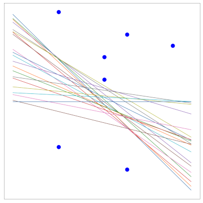

Apprendre est il possible ? On s’intéresse ici à quelques aspects théoriques sur cette question.
Exemple introductif#
Tirage dans une urne#
Soit une urne remplie de boules noires et blanches. On note \(\mu\) la probabilité (inconnue) de tirer une boule noire. On tire un échantillon \(Z\) de \(n\) boules et on note \(\nu\) la proportion de boules noires dans \(Z\). En « langage » apprentissage, \(Z\) sont les exemples d’apprentissage, l’urne est la population sur laquelle on souhaite faire une prédiction (classification ou régression).
On se pose alors la question suivante : \(\nu\) dit-elle quelque chose sur \(\mu\) ? Deux réponses sont alors envisageables :
la possible : non, \(Z\) peut être majoritairement composé de boules blanches, alors que l’urne est majoritairement remplie de boules noires.
la probable : oui, \(\mu\) vue comme une fréquence doit être proche, sous certaines conditions, de \(\mu\).
Inégalités de Hoeffding#
Interéssons nous à l’aspect probable : si \(n\) est grand, \(\nu\) doit être proche de \(\mu\), et plus précisément :
Proposition 1 (Inégalités de Hoeffding)
La borne ne dépend pas de \(\mu\) et il est donc possible de jouer sur \(\epsilon\) et \(n\) pour assurer une borne aussi petite que l’on veut. Par exemple si \(n=10^3\) :
pour \(\epsilon=5.10^{-2},\ \nu-5.10^{-2}\leq \mu\leq \nu+5.10^{-2}\) avec probabilité \(0.99\).
pour \(\epsilon=1.10^{-1},\ \nu-1.10^{-1}\leq \mu\leq \nu+1.10^{-1}\) avec probabilité \(1-4.10^{-7}\).
En répétant le tirage indépendant de 1000 boules pour constituer \(Z\), et en observant \(\nu\), on peut donc affirmer par exemple que \(\mu\in[\nu-5.10^{-2},\nu + 5.10^{-2}]\) est vrai 99% du temps.
Relation à l’apprentissage - Erreurs d’entraînement et de généralisation#
En apprentissage, l’inconnue n’est pas un réel (\(\mu\)), mais une fonction \(f:X\rightarrow Y\). Le candidat est lui aussi une fonction \(h\) appartenant à un ensemble \(\mathcal{F}\) .Dans la Fig. 1, la figure de gauche présente un exemple de fonction \(f\) à atteindre, celle du milieu une hypothèse \(h\) (classification binaire). La fonction d’erreur (à droite) donne le lieu des points \(\mathbf x\) tels que \(h(\mathbf x)=f(\mathbf x)\) (bleu), \(h(\mathbf x)\neq f(\mathbf x)\) (rouge). L’erreur de \(h\) est donc \(E(h)=P_\mathbf x(h(\mathbf x)\neq f(\mathbf x))\) (l’aire de la région rouge).
Fig. 1 Erreur mesurée sur les échantillons(jaune)#
En pratique, l’espace \(X\) est échantillonné et l’erreur de \(h\) est mesurée sur les échantillons et est dite erreur « out of sample » (ou erreur de généralisation) (Fig. 2):
Fig. 2 Erreur mesurée sur les échantillons(jaune)#
De plus, un problème d’apprentissage supervisé vient naturellement avec un ensemble d’apprentissage \(Z=\left \{(\mathbf x_i,y_i),i\in[\![1,n]\!],\mathbf x_i\in X,y_i\in Y \right \}\), ce qui permet d’évaluer l’erreur d’apprentissage de \(h\) à partir de \(Z\), dite erreur “in sample” (ou erreur d’apprentissage) (Fig. 3).
Fig. 3 Points d’apprentissage de \(Z\), et leur projection sur la fonction d’erreur. Les points bien classés sont en bleu, les mal classés en rouge. L’erreur d’apprentissage est la proportion de points rouge.#
En résumé :
Urne |
Apprentissage |
|---|---|
Boules noires |
\(\mathbf x\) tels que \(h(\mathbf x)\neq f(\mathbf x)\) |
Boules blanches |
\(\mathbf x\) tels que \(h(\mathbf x)= f(\mathbf x)\) |
Tirage d’une boule |
\(P(\mathbf x)\) |
Tirage de \(n\) boules |
\(Z\) |
\(\mu\) : probabilité de tirer une boule noire |
\(E_g(h) = P_\mathbf x(h(\mathbf x)\neq f(\mathbf x))\) |
\(\nu\) : proportion de boules noires dans \(Z\) |
\(E_t(h) = \frac{1}{n}\displaystyle\sum_{i=1}^n \mathbb{I}_{(h(\mathbf x)\neq f(\mathbf x))}\) |
\(E_t(h)\) est aléatoire, mais connue, \(E_g(h)\) est fixe mais inconnue, et les inégalités d’Hoeffding quantifient à quel point \(E_t(h) \approx E_g(h)\) :
Si \(E_t(h)\approx 0\) alors \(E_g(h)\approx 0\) avec forte probabilité. On a appris quelque chose sur \(f\), puisque \(f\approx h\) sur tout \(X\) et pas seulement sur \(Z\). Si \(E_t(h)>>0\) on peut juste dire que \(f\neq h\).
Recherche d’un bon candidat#
Ainsi, il est intéressant pour conclure quelque chose que \(E_t\) soit petite. En apprentissage, on recherche donc dans un espace de fonctions \(\mathcal{F}\) une fonction \(g\) ayant une erreur d’apprentissage \(E_t(g)\) la plus petite possible.
On note \(|\mathcal{F}| = M\), et pour \(h_j\in \mathcal{F}\), on définit l’évènement
Par les inégalités de Hoeffding, on a \(P(A_j)\leq 2e^{-2\epsilon^2n}\).
d’où :
Avec probabilité \(P = 1-2Me^{-2\epsilon^2n}\), \(E_t\) sera donc à \(\epsilon\) près de \(E_g\) et ceci pour tout \(h\in \mathcal{F}\). La convergence sera d’autant meilleure que \(n\) est grand.
On peut alors s’intéresser à la taille de \(Z\) qui assure une “bonne” convergence. `A \(P\) et \(\epsilon\) fixés, on voit alors que tant que
alors avec probabilité \(1-P\), \(|E_t(h)-E_g(h)|\leq \epsilon\) pour tout \(h\in \mathcal{F}\).
De même on peut résoudre en \(\epsilon\) : à \(n\) et \(P\) fixés, on voit qu’avec probabilité \(1-P\) on a pour tout \(h\in \mathcal{F}\) :
Supposons maintenant que \(\forall h\in \mathcal{F},|E_t(h)-E_g(h)|<\epsilon\), peut on en déduire quelque chose sur \(E_g(g)\) ?
Puisque :
alors en notant \(h^* = Arg \displaystyle\min_{h\in \mathcal{F}} E_g(h)\), on a :
et pour garantir cette dernière inégalité avec probabilité \(1-P\), il suffit comme nous l’avons vu que
Ainsi si \(n>>log M\) alors \(E_g(g)\approx E_t(g)\), indépendamment de \(X\), de la distribution \(P(\mathbf x)\), de \(f\) ou de l’algorithme ayant généré \(g\).
L’analyse précédente dit donc que \(E_t(g)\approx 0\), que sous la condition sur \(n\) alors \(E_g(g)\approx E_t(g)\), et que donc l’erreur en généralisation de \(g\) est faible.
Puisque \(E_g(g)\leq E_t(g) +\epsilon\) et \(\epsilon=\sqrt{\frac{1}{2n}log\frac{2M}{P}}\), on en déduit que si \(M\) est petit alors probablement \(E_t(g)\approx E_g(g)\approx 0\), et que si \(M\) est grand alors \(\epsilon\) est possiblement grand et \(E_g(g)\) peut s’éloigner de \(E_t(g)\) (Fig. 4).
Fig. 4 Courbes des erreurs. La courbe rouge représente la complexité du modèle, la courbe bleue l’erreur d’apprentissage et la courbe verte l’erreur en généralisation. Passé \(M^*\), le modèle a tendance à surapprendre \(Z\) et l’erreur en généralisation croît#
Exemple : \(\mathcal F\) est l’ensemble des polynomes de degré \(M\). \(M\) faible signifie par exemple approcher \(f\) par une hypothèse linéaire (sous-apprentissage), et \(M\) fort signifie approcher \(f\) par un polynôme de degré élevé (l’erreur d’entraînement sera très faible, en revanche en raison du sur apprentissage, \(g\) n’aura aucune capacité de généralisation (Fig. 5)).
Fig. 5 Sous et sur apprentissage dans le cas de modèles polynomiaux.#
Théorie de la généralisation#
La théorie de la généralisation va permettre d’étendre la borne
au cas où \(\mathcal F\) est infini.
Quantifier la taille de \(\mathcal F\) par son cardinal \(M\) n’est pas nécessairement pertinent, puisque cette information ne capture pas les possibles similarités entre \(h\in \mathcal F\). \(M\) mesure donc la diversité maximum de \(\mathcal F\) et il faut trouver une mesure de diversité qui soit pertinente pour le problème de l’apprentissage. On parle également de pouvoir d’expression de cet ensemble.
Dichotomies#
Une première idée est de fixer \(n\) points \(Z=\{\mathbf x_i\in X,i\in [\![1,n]\!]\}\) et d’affirmer que \(\mathcal F\) a un bon pouvoir d’expression s’il peut calculer toutes les fonctions sur ces \(n\) points.
La figure suivante présente un exemple. \(\mathcal{F}\) est un ensemble de droites, et \(Z\) contient 7 points (bleu). Du point de vue de \(Z\), \(\mathcal{F}\) réalise juste une séparation binaire de ses points en deux sous-ensembles, les verts et les rouges. La fonction correspondante réalsée est appelée une dichotomie. Pout \(h\in \mathcal{F}\), la dichotomie calcule un \(n\)-uplet de valeurs \(\pm 1\) \((h(\mathbf x_1)\cdots h(\mathbf x_n))\), \(h(\mathbf x_i)\) correspondant à la classe de \(\mathbf x_i\) vue par \(h\).
\(\mathcal{F}\) |
Séparation binaire |
|---|---|
 |
|

Fonction de croissance#
Si \(\mathcal{F}\) a fort un pouvoir d’expression, il doit être capable de réaliser de nombreuses dichotomies de \(Z\). Pour quantifier ce point, on introduit la fonction de croissance.
Definition 1 (Fonction de croissance)
Soit \(Z=\{\mathbf x_i\in X,i\in [\![1,n]\!]\}\) un ensemble de \(n\) points de \(X\). On note
l’ensemble des dichotomies induites par \(\mathcal{F}\) sur \(Z\).
La fonction de croissance de \(\mathcal{F}\) est le nombre maximum de dichotomies induites par \(\mathcal{F}\) sur tout ensemble de \(n\) points :
Bien évidemment \(\Delta_\mathcal{F}(n)\leq 2^n\). Pour mesurer la diversité de \(\mathcal{F}\), on souhaiterait alors remplacer \(M\) par \(\Delta_\mathcal{F}\).
Exemple : soit \(a\in [-1,1]\) et \(\mathcal{F} = \left \{h: \mathbb{R} \rightarrow [-1,1], h(x) = signe(x-a) \right \}\). Il y a alors \(n+1\) dichotomies d’un ensemble de \(n\) points, suivant la position de \(a\) dans l’intervalle [-1,1]. Ainsi \(\Delta_\mathcal{F}(n) = n+1\).
Definition 2 (Pulvérisation)
Soit \(Z=\{\mathbf x_i\in X,i\in [\![1,n]\!]\}\) un ensemble de \(n\) points de \(X\) et \(\mathcal{F}\) un ensemble de fonctions. On dit que \(\mathcal{F}\) pulvérise \(Z\) si \(\Delta_\mathcal{F}(n)=2^n\).
Autrement dit, \(Z\) est pulvérisé par \(\mathcal{F}\) si toutes les dichotomies possibles sur \(Z\) peuvent être décrites par des fonctions de \(\mathcal{F}\).
Definition 3 (Point d’arrêt)
Un point d’arrêt \(k\in \mathbb N\) est tel qu’aucun ensemble de \(k\) points de \(X\) ne puisse être pulvérisé par \(\mathcal{F}\).
On a alors bien évidemment \(\Delta_\mathcal{F}(k)<2^k\). Les points d’arrêt sont généralement plus faciles à trouver que la fonction de croissance.
On a alors les résultats suivants :
Proposition 2
Soit \(n\in \mathbb N\) et \(\mathcal{F}\) un ensemble de fonctions :
s’il n’existe aucun point d’arrêt \(k\leq n\) alors \(\Delta_\mathcal{F}(n)=2^n\)
s’il existe \(k<n\) point darrêt, alors \(\Delta_\mathcal{F}(n)\) est polynomial en \(n\)
`
Theorem 1
Soit \(\mathcal{F}\) un ensemble de fonctions. S’il existe \(k\in\mathbb{N}\) tel que \(\Delta_\mathcal{F}(k)<2^k\) alors :
Ainsi, si \(\mathcal{F}\) a un point d’arrêt, on est assuré d’avoir une bonne capacité de généralisation.
VC-dim#
La dimension de Vapnik-Chervonenkis (VC-dim) est un paramètre unique permettant de caractériser la fonction de croissance.
Definition 4 (VC-dim)
Soit \(\mathcal{F}\) un ensemble de fonctions. La dimension de Vapnik-Chervonenkis de \(\mathcal{F}\) notée \(d_{vc}(\mathcal{F})\), est définie par :
En d’autres termes, \(d_{vc}(\mathcal{F})\) est la cardinalité du plus grand ensemble de points de \(X\) pulvérisé par \(\mathcal{F}\).
Si pour tout \(n, \Delta_\mathcal{F}(n)=2^n\) alors \(d_{vc}(\mathcal{F})=\infty\).
En utilisant le théorème précédent, on a alors
et par récurrence on peut montrer que \(\Delta_\mathcal{F}(n)\leq n^{d_{vc}(\mathcal{F})}+1\).
En remplaçant \(M\) par \(\Delta_\mathcal{F}(n)\) dans l’encadrement de \(|E_t(g)-E_g(g)|\), pour \(h=g\), on a alors
\(|E_t(g)-E_g(g)|\leq\sqrt{\frac{1}{2n}log\frac{2\Delta_\mathcal{F}(n)}{P}}\)
et :
A moins que \(d_{vc}(\mathcal{F})=\infty\), \(\Delta_\mathcal{F}(n)\) est bornée par un polynôme en \(n\)
\(\Delta_\mathcal{F}(n)\) croît logarithmiquement avec \(n\), quel que soit l’ordre du polynôme
Le facteur \(1/n\) fait décroître la dépendance
Ainsi, à \(P\) fixé, \(E_g\) sera arbitrairement proche de \(E_t\) pour \(n\) suffisamment grand
Plus \(d_{vc}(\mathcal{F})\) est faible, plus \(E_g\) se rapproche vite de \(E_t\).
D’autre part, puisque (inégalité de Hoeffding) \((\forall \epsilon>0)\ P(|E_t(g)-E_g(g)|>\epsilon)\leq 2e^{-2\epsilon^2n}\), on a
et comme \(E_g(g)\leq E_t(g)+\sqrt{\frac{1}{2n}log\frac{2M}{P}}\) avec probabilité \(1-P\)
En résumé, si \(d_{vc}(\mathcal{F})\) est fini, alors \(g\) aura une bonne capacité de généralisation, ceci indépendemment de l’algorithme d’apprentissage, de \(P(X)\) et de \(f\).